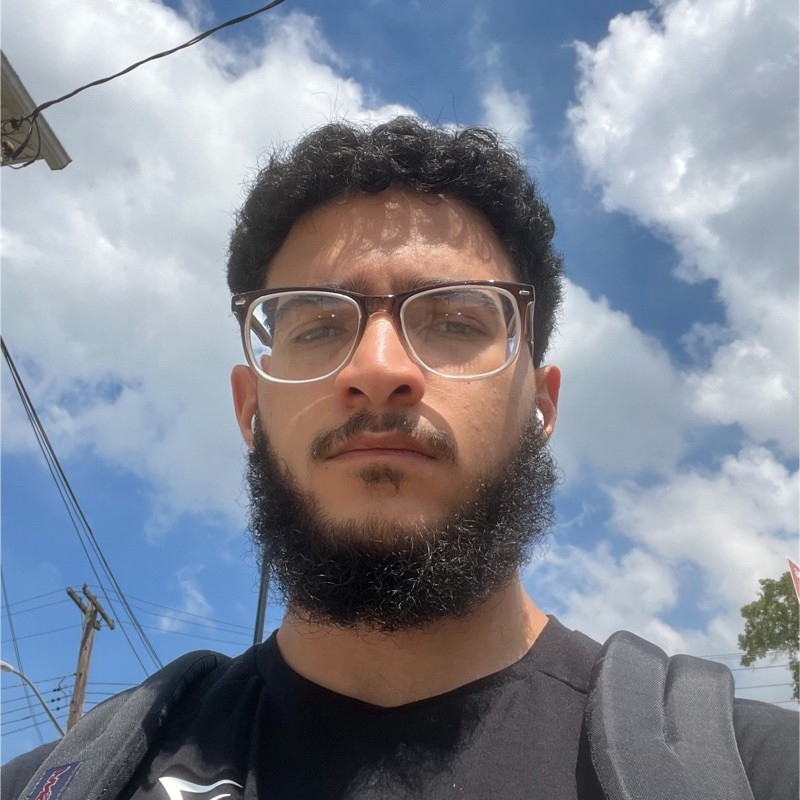

Contact Me
Adham Mustafa Resume
Summary
Aspiring Software Engineer
Education
City University of New York, Queens College
Bachelor of Science in Computer Science, Minor in Arabic (GPA: 3.6)
Work Experience
Headstarter AI Fellow
July 2024 – August 2024
- Developed and implemented technical projects using React and Node as part of a selective AI Web Dev Fellowship.
- Engineered 5 AI-driven projects, impacting 1000+ users through a large-scale final project.
- Sharpened development and project management skills through mentorship from industry software engineers.
- Led team of 4 through project development, refining road mapping, story pointing, and backlog refinement skills.
Front End Web Developer - World Tech VI
April 2024
- Engineered a high-traffic website for a local tech store, boosting annual revenue to over $60,000.
- Revamped site using React and CSS, driving monthly consumer interactions to over 1800 people.
- Managed code versions and project files using Git and GitHub, enhancing workflow efficiency and project tracking.
- Deployed website using Vercel, ensuring seamless scaling and real-time statistics and previews.
Skills
Languages: Python, C++, HTML, CSS, JavaScript, React, NodeJS, Java
Tools/Technologies: Tkinter, Pandas, GitHub, Git, Firebase, Next.js, Vercel